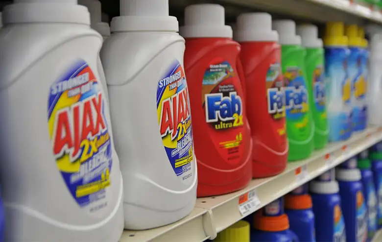
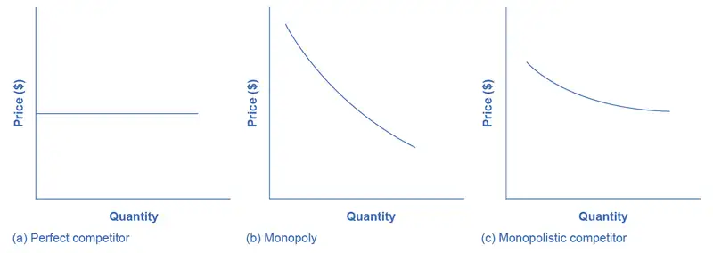
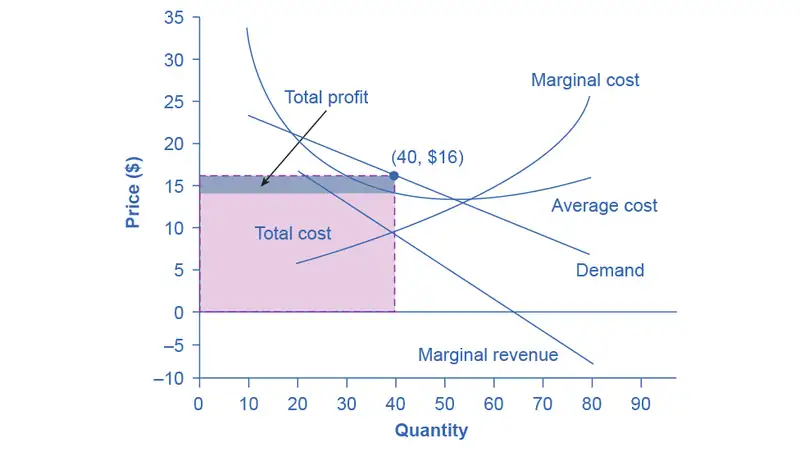
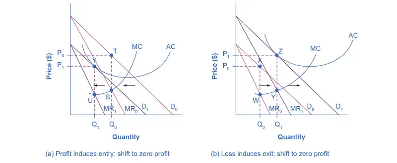
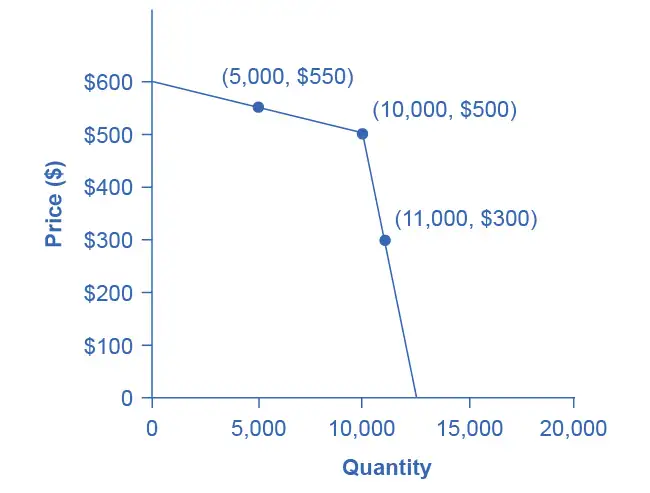
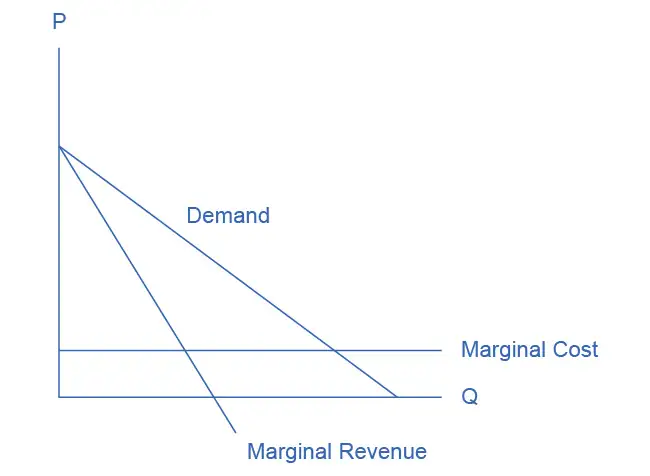
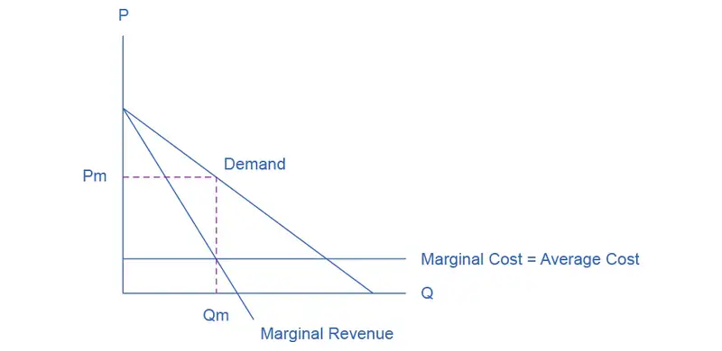
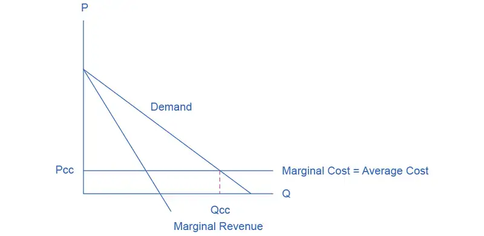

Chapter 10: Monopolistic Competition and Oligopoly¶
Introduction¶

Bring It Home: The Temptation to Defy the Law
Laundry detergent and bags of ice—products of industries that seem pretty mundane, maybe even boring. Hardly! Both have been the center of clandestine meetings and secret deals worthy of a spy novel. In France, between 1997 and 2004, the top four laundry detergent producers (Proctor & Gamble, Henkel, Unilever, and Colgate-Palmolive) controlled about 90 percent of the French soap market. Officials from the soap firms were meeting secretly, in out-of-the-way, small cafés around Paris. Their goals: Stamp out competition and set prices.
Around the same time, the top five Midwest ice makers (Home City Ice, Lang Ice, Tinley Ice, Sisler’s Dairy, and Products of Ohio) had similar goals in mind when they secretly agreed to divide up the bagged ice market.
If both groups could meet their goals, it would enable each to act as though they were a single firm—in essence, a monopoly—and enjoy monopoly-size profits. The problem? In many parts of the world, including the European Union and the United States, it is illegal for firms to divide markets and set prices collaboratively.
These two cases provide examples of markets that are characterized neither as perfect competition nor monopoly. Instead, these firms are competing in market structures that lie between the extremes of monopoly and perfect competition. How do they behave? Why do they exist? We will revisit this case later, to find out what happened.
Chapter Outline: Introduction to Monopolistic Competition and Oligopoly
In this chapter, you will learn about:
- Monopolistic Competition
- Oligopoly
Perfect competition and monopoly are at opposite ends of the competition spectrum. A perfectly competitive market has many firms selling identical products, who all act as price takers in the face of the competition. If you recall, price takers are firms that have no market power. They simply have to take the market price as given.
Monopoly arises when a single firm sells a product for which there are no close substitutes. We consider Microsoft, for instance, as a monopoly because it dominates the operating systems market.
What about the vast majority of real world firms and organizations that fall between these extremes, firms that we could describe as imperfectly competitive? What determines their behavior? They have more influence over the price they charge than perfectly competitive firms, but not as much as a monopoly. What will they do?
One type of imperfectly competitive market is monopolistic competition. Monopolistically competitive markets feature a large number of competing firms, but the products that they sell are not identical. Consider, as an example, the Mall of America in Minnesota, the largest shopping mall in the United States. In 2010, the Mall of America had 24 stores that sold women’s “ready-to-wear” clothing (like Ann Taylor and Urban Outfitters), another 50 stores that sold clothing for both men and women (like Banana Republic, J. Crew, and Nordstrom’s), plus 14 more stores that sold women’s specialty clothing (like Motherhood Maternity and Victoria’s Secret). Most of the markets that consumers encounter at the retail level are monopolistically competitive.
The other type of imperfectly competitive market is oligopoly. Oligopolistic markets are those which a small number of firms dominate. Commercial aircraft provides a good example: Boeing and Airbus each produce slightly less than 50% of the large commercial aircraft in the world. Another example is the U.S. soft drink industry, which Coca-Cola and Pepsi dominate. We characterize oligopolies by high barriers to entry with firms choosing output, pricing, and other decisions strategically based on the decisions of the other firms in the market. In this chapter, we first explore how monopolistically competitive firms will choose their profit-maximizing level of output. We will then discuss oligopolistic firms, which face two conflicting temptations: to collaborate as if they were a single monopoly, or to individually compete to gain profits by expanding output levels and cutting prices. Oligopolistic markets and firms can also take on elements of monopoly and of perfect competition.
10.1 Monopolistic Competition¶
Learning Objectives
By the end of this section, you will be able to:
- Explain the significance of differentiated products
- Describe how a monopolistic competitor chooses price and quantity
- Discuss entry, exit, and efficiency as they pertain to monopolistic competition
- Analyze how advertising can impact monopolistic competition
Monopolistic competition involves many firms competing against each other, but selling products that are distinctive in some way. Examples include stores that sell different styles of clothing; restaurants or grocery stores that sell a variety of food; and even products like golf balls or beer that may be at least somewhat similar but differ in public perception because of advertising and brand names. There are over 600,000 restaurants in the United States. When products are distinctive, each firm has a mini-monopoly on its particular style or flavor or brand name. However, firms producing such products must also compete with other styles and flavors and brand names. The term “monopolistic competition” captures this mixture of mini-monopoly and tough competition, and the following Clear It Up feature introduces its derivation.
Clear It Up: Who invented the theory of imperfect competition?
Two economists independently but simultaneously developed the theory of imperfect competition in 1933. The first was Edward Chamberlin of Harvard University who published The Economics of Monopolistic Competition. The second was Joan Robinson of Cambridge University who published The Economics of Imperfect Competition. Robinson subsequently became interested in macroeconomics and she became a prominent Keynesian, and later a post-Keynesian economist. (See the Welcome to Economics! and The Keynesian Perspective chapters for more on Keynes.)
Differentiated Products¶
A firm can try to make its products different from those of its competitors in several ways: physical aspects of the product, location from which it sells the product, intangible aspects of the product, and perceptions of the product. We call products that are distinctive in one of these ways differentiated products.
Physical aspects of a product include all the phrases you hear in advertisements: unbreakable bottle, nonstick surface, freezer-to-microwave, non-shrink, extra spicy, newly redesigned for your comfort. A firm's location can also create a difference between producers. For example, a gas station located at a heavily traveled intersection can probably sell more gas, because more cars drive by that corner. A supplier to an automobile manufacturer may find that it is an advantage to locate close to the car factory.
Intangible aspects can differentiate a product, too. Some intangible aspects may be promises like a guarantee of satisfaction or money back, a reputation for high quality, services like free delivery, or offering a loan to purchase the product. Finally, product differentiation may occur in the minds of buyers. For example, many people could not tell the difference in taste between common varieties of ketchup or mayonnaise if they were blindfolded but, because of past habits and advertising, they have strong preferences for certain brands. Advertising can play a role in shaping these intangible preferences.
The concept of differentiated products is closely related to the degree of variety that is available. If everyone in the economy wore only blue jeans, ate only white bread, and drank only tap water, then the markets for clothing, food, and drink would be much closer to perfectly competitive. The variety of styles, flavors, locations, and characteristics creates product differentiation and monopolistic competition.
Perceived Demand for a Monopolistic Competitor¶
A monopolistically competitive firm perceives a demand for its goods that is an intermediate case between monopoly and competition. Figure 10.2 offers a reminder that the demand curve that a perfectly competitive firm faces is perfectly elastic or flat, because the perfectly competitive firm can sell any quantity it wishes at the prevailing market price. In contrast, the demand curve, as faced by a monopolist, is the market demand curve, since a monopolist is the only firm in the market, and hence is downward sloping.

The demand curve as a monopolistic competitor faces is not flat, but rather downward-sloping, which means that the monopolistic competitor can raise its price without losing all of its customers or lower the price and gain more customers. Since there are substitutes, the demand curve facing a monopolistically competitive firm is more elastic than that of a monopoly where there are no close substitutes. If a monopolist raises its price, some consumers will choose not to purchase its product—but they will then need to buy a completely different product. However, when a monopolistic competitor raises its price, some consumers will choose not to purchase the product at all, but others will choose to buy a similar product from another firm. If a monopolistic competitor raises its price, it will not lose as many customers as would a perfectly competitive firm, but it will lose more customers than would a monopoly that raised its prices.
At a glance, the demand curves that a monopoly and a monopolistic competitor face look similar—that is, they both slope down. However, the underlying economic meaning of these perceived demand curves is different, because a monopolist faces the market demand curve and a monopolistic competitor does not. Rather, a monopolistically competitive firm’s demand curve is but one of many firms that make up the “before” market demand curve. Are you following? If so, how would you categorize the market for golf balls? Take a swing, then see the following Clear It Up feature.
Clear It Up: Are golf balls really differentiated products?
Monopolistic competition refers to an industry that has more than a few firms, each offering a product which, from the consumer’s perspective, is different from its competitors. The U.S. Golf Association runs a laboratory that tests 20,000 golf balls a year. There are strict rules for what makes a golf ball legal. A ball's weight cannot exceed 1.620 ounces and its diameter cannot be less than 1.680 inches (which is a weight of 45.93 grams and a diameter of 42.67 millimeters, in case you were wondering). The Association also tests the balls by hitting them at different speeds. For example, the distance test involves having a mechanical golfer hit the ball with a titanium driver and a swing speed of 120 miles per hour. As the testing center explains: “The USGA system then uses an array of sensors that accurately measure the flight of a golf ball during a short, indoor trajectory from a ball launcher. From this flight data, a computer calculates the lift and drag forces that are generated by the speed, spin, and dimple pattern of the ball. ... The distance limit is 317 yards.”
Over 1800 golf balls made by more than 100 companies meet the USGA standards. The balls do differ in various ways, such as the pattern of dimples on the ball, the types of plastic on the cover and in the cores, and other factors. Since all balls need to conform to the USGA tests, they are much more alike than different. In other words, golf ball manufacturers are monopolistically competitive.
However, retail sales of golf balls are about $500 million per year, which means that many large companies have a powerful incentive to persuade players that golf balls are highly differentiated and that it makes a huge difference which one you choose. Sure, Tiger Woods can tell the difference. For the average amateur golfer who plays a few times a summer—and who loses many golf balls to the woods and lake and needs to buy new ones—most golf balls are pretty much indistinguishable.
How a Monopolistic Competitor Chooses Price and Quantity¶
The monopolistically competitive firm decides on its profit-maximizing quantity and price in much the same way as a monopolist. A monopolistic competitor, like a monopolist, faces a downward-sloping demand curve, and so it will choose some combination of price and quantity along its perceived demand curve.
As an example of a profit-maximizing monopolistic competitor, consider the Authentic Chinese Pizza store, which serves pizza with cheese, sweet and sour sauce, and your choice of vegetables and meats. Although Authentic Chinese Pizza must compete against other pizza businesses and restaurants, it has a differentiated product. The firm’s perceived demand curve is downward sloping, as Figure 10.3 shows and the first two columns of Table 10.1.

Table 10.1 Revenue and Cost Schedule
| Quantity | Price | Total Revenue | Marginal Revenue | Total Cost | Marginal Cost | Average Cost |
|---|---|---|---|---|---|---|
| 10 | $23 | $230 | $23 | $340 | $34 | $34 |
| 20 | $20 | $400 | $17 | $400 | $6 | $20 |
| 30 | $18 | $540 | $14 | $480 | $8 | $16 |
| 40 | $16 | $640 | $10 | $580 | $10 | $14.50 |
| 50 | $14 | $700 | $6 | $700 | $12 | $14 |
| 60 | $12 | $720 | $2 | $840 | $14 | $14 |
| 70 | $10 | $700 | –$2 | $1,020 | $18 | $14.57 |
| 80 | $8 | $640 | –$6 | $1,280 | $26 | $16 |
We can multiply the combinations of price and quantity at each point on the demand curve to calculate the total revenue that the firm would receive, which is in the third column of Table 10.1. We calculate marginal revenue, in the fourth column, as the change in total revenue divided by the change in quantity. The final columns of Table 10.1 show total cost, marginal cost, and average cost. As always, we calculate marginal cost by dividing the change in total cost by the change in quantity, while we calculate average cost by dividing total cost by quantity. The following Work It Out feature shows how these firms calculate how much of their products to supply at what price.
Work It Out: How a Monopolistic Competitor Determines How Much to Produce and at What Price
The process by which a monopolistic competitor chooses its profit-maximizing quantity and price resembles closely how a monopoly makes these decisions process. First, the firm selects the profit-maximizing quantity to produce. Then the firm decides what price to charge for that quantity.
Step 1. The monopolistic competitor determines its profit-maximizing level of output. In this case, the Authentic Chinese Pizza company will determine the profit-maximizing quantity to produce by considering its marginal revenues and marginal costs. Two scenarios are possible:
- If the firm is producing at a quantity of output where marginal revenue exceeds marginal cost, then the firm should keep expanding production, because each marginal unit is adding to profit by bringing in more revenue than its cost. In this way, the firm will produce up to the quantity where MR = MC.
- If the firm is producing at a quantity where marginal costs exceed marginal revenue, then each marginal unit is costing more than the revenue it brings in, and the firm will increase its profits by reducing the quantity of output until MR = MC.
In this example, MR and MC intersect at a quantity of 40, which is the profit-maximizing level of output for the firm.
Step 2. The monopolistic competitor decides what price to charge. When the firm has determined its profit-maximizing quantity of output, it can then look to its perceived demand curve to find out what it can charge for that quantity of output. On the graph, we show this process as a vertical line reaching up through the profit-maximizing quantity until it hits the firm’s perceived demand curve. For Authentic Chinese Pizza, it should charge a price of $16 per pizza for a quantity of 40.
Once the firm has chosen price and quantity, it’s in a position to calculate total revenue, total cost, and profit. At a quantity of 40, the price of $16 lies above the average cost curve, so the firm is making economic profits. From Table 10.1 we can see that, at an output of 40, the firm’s total revenue is $640 and its total cost is $580, so profits are $60. In Figure 10.3, the firm’s total revenues are the rectangle with the quantity of 40 on the horizontal axis and the price of $16 on the vertical axis. The firm’s total costs are the light shaded rectangle with the same quantity of 40 on the horizontal axis but the average cost of $14.50 on the vertical axis. Profits are total revenues minus total costs, which is the shaded area above the average cost curve.
Although the process by which a monopolistic competitor makes decisions about quantity and price is similar to the way in which a monopolist makes such decisions, two differences are worth remembering. First, although both a monopolist and a monopolistic competitor face downward-sloping demand curves, the monopolist’s perceived demand curve is the market demand curve, while the perceived demand curve for a monopolistic competitor is based on the extent of its product differentiation and how many competitors it faces. Second, a monopolist is surrounded by barriers to entry and need not fear entry, but a monopolistic competitor who earns profits must expect the entry of firms with similar, but differentiated, products.
Monopolistic Competitors and Entry¶
If one monopolistic competitor earns positive economic profits, other firms will be tempted to enter the market. A gas station with a great location must worry that other gas stations might open across the street or down the road—and perhaps the new gas stations will sell coffee or have a carwash or some other attraction to lure customers. A successful restaurant with a unique barbecue sauce must be concerned that other restaurants will try to copy the sauce or offer their own unique recipes. A laundry detergent with a great reputation for quality must take note that other competitors may seek to build their own reputations.
The entry of other firms into the same general market (like gas, restaurants, or detergent) shifts the demand curve that a monopolistically competitive firm faces. As more firms enter the market, the quantity demanded at a given price for any particular firm will decline, and the firm’s perceived demand curve will shift to the left. As a firm’s perceived demand curve shifts to the left, its marginal revenue curve will shift to the left, too. The shift in marginal revenue will change the profit-maximizing quantity that the firm chooses to produce, since marginal revenue will then equal marginal cost at a lower quantity.
Figure 10.4 (a) shows a situation in which a monopolistic competitor was earning a profit with its original perceived demand curve (D0). The intersection of the marginal revenue curve (MR0) and marginal cost curve (MC) occurs at point S, corresponding to quantity Q0, which is associated on the demand curve at point T with price P0. The combination of price P0 and quantity Q0 lies above the average cost curve, which shows that the firm is earning positive economic profits.

Unlike a monopoly, with its high barriers to entry, a monopolistically competitive firm with positive economic profits will attract competition. When another competitor enters the market, the original firm’s perceived demand curve shifts to the left, from D0 to D1, and the associated marginal revenue curve shifts from MR0 to MR1. The new profit-maximizing output is Q1, because the intersection of the MR1 and MC now occurs at point U. Moving vertically up from that quantity on the new demand curve, the optimal price is at P1.
As long as the firm is earning positive economic profits, new competitors will continue to enter the market, reducing the original firm’s demand and marginal revenue curves. The long-run equilibrium is in the figure at point Y, where the firm’s perceived demand curve touches the average cost curve. When price is equal to average cost, economic profits are zero. Thus, although a monopolistically competitive firm may earn positive economic profits in the short term, the process of new entry will drive down economic profits to zero in the long run. Remember that zero economic profit is not equivalent to zero accounting profit. A zero economic profit means the firm’s accounting profit is equal to what its resources could earn in their next best use. Figure 10.4 (b) shows the reverse situation, where a monopolistically competitive firm is originally losing money. The adjustment to long-run equilibrium is analogous to the previous example. The economic losses lead to firms exiting, which will result in increased demand for this particular firm, and consequently lower losses. Firms exit up to the point where there are no more losses in this market, for example when the demand curve touches the average cost curve, as in point Z.
Monopolistic competitors can make an economic profit or loss in the short run, but in the long run, entry and exit will drive these firms toward a zero economic profit outcome. However, the zero economic profit outcome in monopolistic competition looks different from the zero economic profit outcome in perfect competition in several ways relating both to efficiency and to variety in the market.
Monopolistic Competition and Efficiency¶
The long-term result of entry and exit in a perfectly competitive market is that all firms end up selling at the price level determined by the lowest point on the average cost curve. This outcome is why perfect competition displays productive efficiency: goods are produced at the lowest possible average cost. However, in monopolistic competition, the end result of entry and exit is that firms end up with a price that lies on the downward-sloping portion of the average cost curve, not at the very bottom of the AC curve. Thus, monopolistic competition will not be productively efficient.
In a perfectly competitive market, each firm produces at a quantity where price is set equal to marginal cost, both in the short and long run. This outcome is why perfect competition displays allocative efficiency: the social benefits of additional production, as measured by the marginal benefit, which is the same as the price, equal the marginal costs to society of that production. In a monopolistically competitive market, the rule for maximizing profit is to set MR = MC—and price is higher than marginal revenue, not equal to it because the demand curve is downward sloping. When P > MC, which is the outcome in a monopolistically competitive market, the benefits to society of providing additional quantity, as measured by the price that people are willing to pay, exceed the marginal costs to society of producing those units. A monopolistically competitive firm does not produce more, which means that society loses the net benefit of those extra units. This is the same argument we made about monopoly, but in this case the allocative inefficiency will be smaller. Thus, a monopolistically competitive industry will produce a lower quantity of a good and charge a higher price for it than would a perfectly competitive industry. See the following Clear It Up feature for more detail on the impact of demand shifts.
Clear It Up: Why does a shift in perceived demand cause a shift in marginal revenue?
We use the combinations of price and quantity at each point on a firm’s perceived demand curve to calculate total revenue for each combination of price and quantity. We then use this information on total revenue to calculate marginal revenue, which is the change in total revenue divided by the change in quantity. A change in perceived demand will change total revenue at every quantity of output and in turn, the change in total revenue will shift marginal revenue at each quantity of output. Thus, when entry occurs in a monopolistically competitive industry, the perceived demand curve for each firm will shift to the left, because a smaller quantity will be demanded at any given price. Another way of interpreting this shift in demand is to notice that, for each quantity sold, the firm will charge a lower price. Consequently, the marginal revenue will be lower for each quantity sold—and the marginal revenue curve will shift to the left as well. Conversely, exit causes the perceived demand curve for a monopolistically competitive firm to shift to the right and the corresponding marginal revenue curve to shift right, too.
A monopolistically competitive industry does not display productive or allocative efficiency in either the short run, when firms are making economic profits and losses, nor in the long run, when firms are earning zero profits.
The Benefits of Variety and Product Differentiation¶
Even though monopolistic competition does not provide productive efficiency or allocative efficiency, it does have benefits of its own. Product differentiation is based on variety and innovation. Most people would prefer to live in an economy with many kinds of clothes, foods, and car styles; not in a world of perfect competition where everyone will always wear blue jeans and white shirts, eat only spaghetti with plain red sauce, and drive an identical model of car. Most people would prefer to live in an economy where firms are struggling to figure out ways of attracting customers by methods like friendlier service, free delivery, guarantees of quality, variations on existing products, and a better shopping experience.
Economists have struggled, with only partial success, to address the question of whether a market-oriented economy produces the optimal amount of variety. Critics of market-oriented economies argue that society does not really need dozens of different athletic shoes or breakfast cereals or automobiles. They argue that much of the cost of creating such a high degree of product differentiation, and then of advertising and marketing this differentiation, is socially wasteful—that is, most people would be just as happy with a smaller range of differentiated products produced and sold at a lower price. Defenders of a market-oriented economy respond that if people do not want to buy differentiated products or highly advertised brand names, no one is forcing them to do so. Moreover, they argue that consumers benefit substantially when firms seek short-term profits by providing differentiated products. This controversy may never be fully resolved, in part because deciding on the optimal amount of variety is very difficult, and in part because the two sides often place different values on what variety means for consumers. Read the following Clear It Up feature for a discussion on the role that advertising plays in monopolistic competition.
Clear It Up: How does advertising impact monopolistic competition?
The U.S. economy spent about $180.12 billion on advertising in 2014, according to eMarketer.com. Roughly one third of this was television advertising, and another third was divided roughly equally between internet, newspapers, and radio. The remaining third was divided between direct mail, magazines, telephone directory yellow pages, and billboards. Mobile devices are increasing the opportunities for advertisers.
Advertising is all about explaining to people, or making people believe, that the products of one firm are differentiated from another firm's products. In the framework of monopolistic competition, there are two ways to conceive of how advertising works: either advertising causes a firm’s perceived demand curve to become more inelastic (that is, it causes the perceived demand curve to become steeper); or advertising causes demand for the firm’s product to increase (that is, it causes the firm’s perceived demand curve to shift to the right). In either case, a successful advertising campaign may allow a firm to sell either a greater quantity or to charge a higher price, or both, and thus increase its profits.
However, economists and business owners have also long suspected that much of the advertising may only offset other advertising. Economist A. C. Pigou wrote the following back in 1920 in his book, The Economics of Welfare:
“It may happen that expenditures on advertisement made by competing monopolists [that is, what we now call monopolistic competitors] will simply neutralise one another, and leave the industrial position exactly as it would have been if neither had expended anything. For, clearly, if each of two rivals makes equal efforts to attract the favour of the public away from the other, the total result is the same as it would have been if neither had made any effort at all.”
10.2 Oligopoly¶
Learning Objectives
By the end of this section, you will be able to:
- Explain why and how oligopolies exist
- Contrast collusion and competition
- Interpret and analyze the prisoner’s dilemma diagram
- Evaluate the tradeoffs of imperfect competition
Many purchases that individuals make at the retail level are produced in markets that are neither perfectly competitive, monopolies, nor monopolistically competitive. Rather, they are oligopolies. Oligopoly arises when a small number of large firms have all or most of the sales in an industry. Examples of oligopoly abound and include the auto industry, cable television, and commercial air travel. Oligopolistic firms are like cats in a bag. They can either scratch each other to pieces or cuddle up and get comfortable with one another. If oligopolists compete hard, they may end up acting very much like perfect competitors, driving down costs and leading to zero profits for all. If oligopolists collude with each other, they may effectively act like a monopoly and succeed in pushing up prices and earning consistently high levels of profit. We typically characterize oligopolies by mutual interdependence where various decisions such as output, price, and advertising depend on other firm(s)' decisions. Analyzing the choices of oligopolistic firms about pricing and quantity produced involves considering the pros and cons of competition versus collusion at a given point in time.
Why Do Oligopolies Exist?¶
A combination of the barriers to entry that create monopolies and the product differentiation that characterizes monopolistic competition can create the setting for an oligopoly. For example, when a government grants a patent for an invention to one firm, it may create a monopoly. When the government grants patents to, for example, three different pharmaceutical companies that each has its own drug for reducing high blood pressure, those three firms may become an oligopoly.
Similarly, a natural monopoly will arise when the quantity demanded in a market is only large enough for a single firm to operate at the minimum of the long-run average cost curve. In such a setting, the market has room for only one firm, because no smaller firm can operate at a low enough average cost to compete, and no larger firm could sell what it produced given the quantity demanded in the market.
Quantity demanded in the market may also be two or three times the quantity needed to produce at the minimum of the average cost curve—which means that the market would have room for only two or three oligopoly firms (and they need not produce differentiated products). Again, smaller firms would have higher average costs and be unable to compete, while additional large firms would produce such a high quantity that they would not be able to sell it at a profitable price. This combination of economies of scale and market demand creates the barrier to entry, which led to the Boeing-Airbus oligopoly (also called a duopoly) for large passenger aircraft.
The product differentiation at the heart of monopolistic competition can also play a role in creating oligopoly. For example, firms may need to reach a certain minimum size before they are able to spend enough on advertising and marketing to create a recognizable brand name. The problem in competing with, say, Coca-Cola or Pepsi is not that producing fizzy drinks is technologically difficult, but rather that creating a brand name and marketing effort to equal Coke or Pepsi is an enormous task.
Collusion or Competition?¶
When oligopoly firms in a certain market decide what quantity to produce and what price to charge, they face a temptation to act as if they were a monopoly. By acting together, oligopolistic firms can hold down industry output, charge a higher price, and divide the profit among themselves. When firms act together in this way to reduce output and keep prices high, it is called collusion. A group of firms that have a formal agreement to collude to produce the monopoly output and sell at the monopoly price is called a cartel. See the following Clear It Up feature for a more in-depth analysis of the difference between the two.
Clear It Up: Collusion versus cartels: How to differentiate
In the United States, as well as many other countries, it is illegal for firms to collude since collusion is anti-competitive behavior, which is a violation of antitrust law. Both the Antitrust Division of the Justice Department and the Federal Trade Commission have responsibilities for preventing collusion in the United States.
The problem of enforcement is finding hard evidence of collusion. Cartels are formal agreements to collude. Because cartel agreements provide evidence of collusion, they are rare in the United States. Instead, most collusion is tacit, where firms implicitly reach an understanding that competition is bad for profits.
Economists have understood for a long time the desire of businesses to avoid competing so that they can instead raise the prices that they charge and earn higher profits. Adam Smith wrote in Wealth of Nations in 1776: “People of the same trade seldom meet together, even for merriment and diversion, but the conversation ends in a conspiracy against the public, or in some contrivance to raise prices.”
Even when oligopolists recognize that they would benefit as a group by acting like a monopoly, each individual oligopoly faces a private temptation to produce just a slightly higher quantity and earn slightly higher profit—while still counting on the other oligopolists to hold down their production and keep prices high. If at least some oligopolists give in to this temptation and start producing more, then the market price will fall. A small handful of oligopoly firms may end up competing so fiercely that they all find themselves earning zero economic profits—as if they were perfect competitors.
The Prisoner’s Dilemma¶
Because of the complexity of oligopoly, which is the result of mutual interdependence among firms, there is no single, generally-accepted theory of how oligopolies behave, in the same way that we have theories for all the other market structures. Instead, economists use game theory, a branch of mathematics that analyzes situations in which players must make decisions and then receive payoffs based on what other players decide to do. Game theory has found widespread applications in the social sciences, as well as in business, law, and military strategy.
The prisoner’s dilemma is a scenario in which the gains from cooperation are larger than the rewards from pursuing self-interest. It applies well to oligopoly. (Note that the term "prisoner" is not typically an accurate term for someone who has recently been arrested, but we will use the term here, since this scenario is widely used and referenced in economic, business, and social contexts.) The story behind the prisoner’s dilemma goes like this:
Two co-conspirators are arrested. When they are taken to the police station, they refuse to say anything and are put in separate interrogation rooms. Eventually, a police officer enters the room where Prisoner A is being held and says: “You know what? Your partner in the other room is confessing. Your partner is going to get a light prison sentence of just one year, and because you’re remaining silent, the judge is going to stick you with eight years in prison. Why don’t you get smart? If you confess, too, we’ll cut your jail time down to five years, and your partner will get five years, also.” Over in the next room, another police officer is giving exactly the same speech to Prisoner B. What the police officers do not say is that if both prisoners remain silent, the evidence against them is not especially strong, and the prisoners will end up with only two years in jail each.
The game theory situation facing the two prisoners is in Table 10.2. To understand the dilemma, first consider the choices from Prisoner A’s point of view. If A believes that B will confess, then A should confess, too, so as to not get stuck with the eight years in prison. However, if A believes that B will not confess, then A will be tempted to act selfishly and confess, so as to serve only one year. The key point is that A has an incentive to confess regardless of what choice B makes! B faces the same set of choices, and thus will have an incentive to confess regardless of what choice A makes. To confess is called the dominant strategy. It is the strategy an individual (or firm) will pursue regardless of the other individual’s (or firm’s) decision. The result is that if prisoners pursue their own self-interest, both are likely to confess, and end up being sentenced to a total of 10 years of jail time between them.
Table 10.2 The Prisoner’s Dilemma Problem
| Prisoner B | |||
| Remain Silent (cooperate with other prisoner) | Confess (do not cooperate with other prisoner) | ||
| Prisoner A | Remain Silent (cooperate with other prisoner) | A gets 2 years, B gets 2 years | A gets 8 years, B gets 1 year |
| Confess (do not cooperate with other prisoner) | A gets 1 year, B gets 8 years | A gets 5 years B gets 5 years | |
The game is called a dilemma because if the two prisoners had cooperated by both remaining silent, they would only have been incarcerated for two years each, for a total of four years between them. If the two prisoners can work out some way of cooperating so that neither one will confess, they will both be better off than if they each follow their own individual self-interest, which in this case leads straight into longer terms.
The Oligopoly Version of the Prisoner’s Dilemma¶
The members of an oligopoly can face a prisoner’s dilemma, also. If each of the oligopolists cooperates in holding down output, then high monopoly profits are possible. Each oligopolist, however, must worry that while it is holding down output, other firms are taking advantage of the high price by raising output and earning higher profits. Table 10.3 shows the prisoner’s dilemma for a two-firm oligopoly—known as a duopoly. If Firms A and B both agree to hold down output, they are acting together as a monopoly and will each earn $1,000 in profits. However, both firms’ dominant strategy is to increase output, in which case each will earn $400 in profits.
Table 10.3 A Prisoner’s Dilemma for Oligopolists
| Firm B | |||
| Hold Down Output (cooperate with other firm) | Increase Output (do not cooperate with other firm) | ||
| Firm A | Hold Down Output (cooperate with other firm) | A gets $1,000, B gets $1,000 | A gets $200, B gets $1,500 |
| Increase Output (do not cooperate with other firm) | A gets $1,500, B gets $200 | A gets $400, B gets $400 | |
Can the two firms trust each other? Consider the situation of Firm A:
- If A thinks that B will cheat on their agreement and increase output, then A will increase output, too, because for A the profit of $400 when both firms increase output (the bottom right-hand choice in Table 10.3) is better than a profit of only $200 if A keeps output low and B raises output (the upper right-hand choice in the table).
- If A thinks that B will cooperate by holding down output, then A may seize the opportunity to earn higher profits by raising output. After all, if B is going to hold down output, then A can earn $1,500 in profits by expanding output (the bottom left-hand choice in the table) compared with only $1,000 by holding down output as well (the upper left-hand choice in the table).
Thus, firm A will reason that it makes sense to expand output if B holds down output and that it also makes sense to expand output if B raises output. Again, B faces a parallel set of decisions that will lead B also to expand output.
The result of this prisoner’s dilemma is often that even though A and B could make the highest combined profits by cooperating in producing a lower level of output and acting like a monopolist, the two firms may well end up in a situation where they each increase output and earn only $400 each in profits. The following Clear It Up feature discusses one cartel scandal in particular.
Clear It Up: What is the Lysine cartel?
Lysine, a $600 million-a-year industry, is an amino acid that farmers use as a feed additive to ensure the proper growth of swine and poultry. The primary U.S. producer of lysine is Archer Daniels Midland (ADM), but several other large European and Japanese firms are also in this market. For a time in the first half of the 1990s, the world’s major lysine producers met together in hotel conference rooms and decided exactly how much each firm would sell and what it would charge. The U.S. Federal Bureau of Investigation (FBI), however, had learned of the cartel and placed wire taps on a number of their phone calls and meetings.
From FBI surveillance tapes, following is a comment that Terry Wilson, president of the corn processing division at ADM, made to the other lysine producers at a 1994 meeting in Mona, Hawaii:
“I wanna go back and I wanna say something very simple. If we’re going to trust each other, okay, and if I’m assured that I’m gonna get 67,000 tons by the year’s end, we’re gonna sell it at the prices we agreed to . . . The only thing we need to talk about there because we are gonna get manipulated by these [expletive] buyers—they can be smarter than us if we let them be smarter. . . . They [the customers] are not your friend. They are not my friend. And we gotta have ‘em, but they are not my friends. You are my friend. I wanna be closer to you than I am to any customer. Cause you can make us ... money. ... And all I wanna tell you again is let’s—let’s put the prices on the board. Let’s all agree that’s what we’re gonna do and then walk out of here and do it.”
The price of lysine doubled while the cartel was in effect. Confronted by the FBI tapes, Archer Daniels Midland pled guilty in 1996 and paid a fine of $100 million. A number of top executives, both at ADM and other firms, later paid fines of up to $350,000 and were sentenced to 24–30 months in prison.
In another one of the FBI recordings, the president of Archer Daniels Midland told an executive from another competing firm that ADM had a slogan that, in his words, had “penetrated the whole company.” The company president stated the slogan this way: “Our competitors are our friends. Our customers are the enemy.” That slogan could stand as the motto of cartels everywhere.
How to Enforce Cooperation¶
How can parties who find themselves in a prisoner’s dilemma situation avoid the undesired outcome and cooperate with each other? The way out of a prisoner’s dilemma is to find a way to penalize those who do not cooperate.
Perhaps the easiest approach for colluding oligopolists, as you might imagine, would be to sign a contract with each other that they will hold output low and keep prices high. If a group of U.S. companies signed such a contract, however, it would be illegal. Certain international organizations, like the nations that are members of the Organization of Petroleum Exporting Countries (OPEC), have signed international agreements to act like a monopoly, hold down output, and keep prices high so that all of the countries can make high profits from oil exports. Such agreements, however, because they fall in a gray area of international law, are not legally enforceable. If Nigeria, for example, decides to start cutting prices and selling more oil, Saudi Arabia cannot sue Nigeria in court and force it to stop.
Link It Up
Visit the Organization of the Petroleum Exporting Countries website and learn more about its history and how it defines itself.
Because oligopolists cannot sign a legally enforceable contract to act like a monopoly, the firms may instead keep close tabs on what other firms are producing and charging. Alternatively, oligopolists may choose to act in a way that generates pressure on each firm to stick to its agreed quantity of output.
One example of the pressure these firms can exert on one another is the kinked demand curve, in which competing oligopoly firms commit to match price cuts, but not price increases. Figure 10.5 shows this situation. Say that an oligopoly airline has agreed with the rest of a cartel to provide a quantity of 10,000 seats on the New York to Los Angeles route, at a price of $500. This choice defines the kink in the firm’s perceived demand curve. The reason that the firm faces a kink in its demand curve is because of how the other oligopolists react to changes in the firm’s price. If the oligopoly decides to produce more and cut its price, the other members of the cartel will immediately match any price cuts—and therefore, a lower price brings very little increase in quantity sold.
If one firm cuts its price to $300, it will be able to sell only 11,000 seats. However, if the airline seeks to raise prices, the other oligopolists will not raise their prices, and so the firm that raised prices will lose a considerable share of sales. For example, if the firm raises its price to $550, its sales drop to 5,000 seats sold. Thus, if oligopolists always match price cuts by other firms in the cartel, but do not match price increases, then none of the oligopolists will have a strong incentive to change prices, since the potential gains are minimal. This strategy can work like a silent form of cooperation, in which the cartel successfully manages to hold down output, increase price, and share a monopoly level of profits even without any legally enforceable agreement.

Many real-world oligopolies, prodded by economic changes, legal and political pressures, and the egos of their top executives, go through episodes of cooperation and competition. If oligopolies could sustain cooperation with each other on output and pricing, they could earn profits as if they were a single monopoly. However, each firm in an oligopoly has an incentive to produce more and grab a bigger share of the overall market; when firms start behaving in this way, the market outcome in terms of prices and quantity can be similar to that of a highly competitive market.
Tradeoffs of Imperfect Competition¶
Monopolistic competition is probably the single most common market structure in the U.S. economy. It provides powerful incentives for innovation, as firms seek to earn profits in the short run, while entry assures that firms do not earn economic profits in the long run. However, monopolistically competitive firms do not produce at the lowest point on their average cost curves. In addition, the endless search to impress consumers through product differentiation may lead to excessive social expenses on advertising and marketing.
Oligopoly is probably the second most common market structure. When oligopolies result from patented innovations or from taking advantage of economies of scale to produce at low average cost, they may provide considerable benefit to consumers. Oligopolies are often buffered by significant barriers to entry, which enable the oligopolists to earn sustained profits over long periods of time. Oligopolists also do not typically produce at the minimum of their average cost curves. When they lack vibrant competition, they may lack incentives to provide innovative products and high-quality service.
The task of public policy with regard to competition is to sort through these multiple realities, attempting to encourage behavior that is beneficial to the broader society and to discourage behavior that only adds to the profits of a few large companies, with no corresponding benefit to consumers. Monopoly and Antitrust Policy discusses the delicate judgments that go into this task.
Bring It Home: The Temptation to Defy the Law
Oligopolistic firms have been called “cats in a bag,” as this chapter mentioned. The French detergent makers chose to “cozy up” with each other. The result? An uneasy and tenuous relationship. When the Wall Street Journal reported on the matter, it wrote: “According to a statement a Henkel manager made to the [French anti-trust] commission, the detergent makers wanted ‘to limit the intensity of the competition between them and clean up the market.’ Nevertheless, by the early 1990s, a price war had broken out among them.” During the soap executives’ meetings, sometimes lasting more than four hours, the companies established complex pricing structures. “One [soap] executive recalled ‘chaotic’ meetings as each side tried to work out how the other had bent the rules.” Like many cartels, the soap cartel disintegrated due to the very strong temptation for each member to maximize its own individual profits.
How did this soap opera end? After an investigation, French antitrust authorities fined Colgate-Palmolive, Henkel, and Proctor & Gamble a total of €361 million ($484 million). A similar fate befell the icemakers. Bagged ice is a commodity, a perfect substitute, generally sold in 7- or 22-pound bags. No one cares what label is on the bag. By agreeing to carve up the ice market, control broad geographic swaths of territory, and set prices, the icemakers moved from perfect competition to a monopoly model. After the agreements, each firm was the sole supplier of bagged ice to a region. There were profits in both the long run and the short run. According to the courts: “These companies illegally conspired to manipulate the marketplace.” Fines totaled about $600,000—a steep fine considering a bag of ice sells for under $3 in most parts of the United States.
Even though it is illegal in many parts of the world for firms to set prices and carve up a market, the temptation to earn higher profits makes it extremely tempting to defy the law.
Chapter Review¶
Key Terms¶
- cartel
- a group of firms that collude to produce the monopoly output and sell at the monopoly price
- collusion
- when firms act together to reduce output and keep prices high
- differentiated product
- a product that consumers perceive as distinctive in some way
- duopoly
- an oligopoly with only two firms
- game theory
- a branch of mathematics that economists use to analyze situations in which players must make decisions and then receive payoffs based on what decisions the other players make
- imperfectly competitive
- firms and organizations that fall between the extremes of monopoly and perfect competition
- kinked demand curve
- a perceived demand curve that arises when competing oligopoly firms commit to match price cuts, but not price increases
- monopolistic competition
- many firms competing to sell similar but differentiated products
- oligopoly
- when a few large firms have all or most of the sales in an industry
- prisoner’s dilemma
- a game in which the gains from cooperation are larger than the rewards from pursuing self-interest
- product differentiation
- any action that firms do to make consumers think their products are different from their competitors'
Key Concepts and Summary¶
10.1 Monopolistic Competition¶
Monopolistic competition refers to a market where many firms sell differentiated products. Differentiated products can arise from characteristics of the good or service, location from which the firm sells the product, intangible aspects of the product, and perceptions of the product.
The perceived demand curve for a monopolistically competitive firm is downward-sloping, which shows that it is a price maker and chooses a combination of price and quantity. However, the perceived demand curve for a monopolistic competitor is more elastic than the perceived demand curve for a monopolist, because the monopolistic competitor has direct competition, unlike the pure monopolist. A profit-maximizing monopolistic competitor will seek out the quantity where marginal revenue is equal to marginal cost. The monopolistic competitor will produce that level of output and charge the price that the firm’s demand curve indicates.
If the firms in a monopolistically competitive industry are earning economic profits, the industry will attract entry until profits are driven down to zero in the long run. If the firms in a monopolistically competitive industry are suffering economic losses, then the industry will experience exit of firms until economic losses are driven up to zero in the long run.
A monopolistically competitive firm is not productively efficient because it does not produce at the minimum of its average cost curve. A monopolistically competitive firm is not allocatively efficient because it does not produce where P = MC, but instead produces where P > MC. Thus, a monopolistically competitive firm will tend to produce a lower quantity at a higher cost and to charge a higher price than a perfectly competitive firm.
Monopolistically competitive industries do offer benefits to consumers in the form of greater variety and incentives for improved products and services. There is some controversy over whether a market-oriented economy generates too much variety.
10.2 Oligopoly¶
An oligopoly is a situation where a few firms sell most or all of the goods in a market. Oligopolists earn their highest profits if they can band together as a cartel and act like a monopolist by reducing output and raising price. Since each member of the oligopoly can benefit individually from expanding output, such collusion often breaks down—especially since explicit collusion is illegal.
The prisoner’s dilemma is an example of the application of game theory to analysis of oligopoly. It shows how, in certain situations, all sides can benefit from cooperative behavior rather than self-interested behavior. However, the challenge for the parties is to find ways to encourage cooperative behavior.
Self-Check Questions¶
10.1 Monopolistic Competition¶
1. Suppose that, due to a successful advertising campaign, a monopolistic competitor experiences an increase in demand for its product. How will that affect the price it charges and the quantity it supplies?
Answer
An increase in demand will manifest itself as a rightward shift in the demand curve, and a rightward shift in marginal revenue. The shift in marginal revenue will cause a movement up the marginal cost curve to the new intersection between MR and MC at a higher level of output. The new price can be read by drawing a line up from the new output level to the new demand curve, and then over to the vertical axis. The new price should be higher. The increase in quantity will cause a movement along the average cost curve to a possibly higher level of average cost. The price, though, will increase more, causing an increase in total profits.
2. Continuing with the scenario in question 1, in the long run, the positive economic profits that the monopolistic competitor earns will attract a response either from existing firms in the industry or firms outside. As those firms capture the original firm’s profit, what will happen to the original firm’s profit-maximizing price and output levels?
Answer
As long as the original firm is earning positive economic profits, other firms will respond in ways that take away the original firm’s profits. This will manifest itself as a decrease in demand for the original firm’s product, a decrease in the firm’s profit-maximizing price and a decrease in the firm’s profit-maximizing level of output, essentially unwinding the process described in the answer to question 1. In the long-run equilibrium, all firms in monopolistically competitive markets will earn zero economic profits.
10.2 Oligopoly¶
3. Consider the curve in the figure below, which shows the market demand, marginal cost, and marginal revenue curve for firms in an oligopolistic industry. In this example, we assume firms have zero fixed costs.

- Suppose the firms collude to form a cartel. What price will the cartel charge? What quantity will the cartel supply? How much profit will the cartel earn?
- Suppose now that the cartel breaks up and the oligopolistic firms compete as vigorously as possible by cutting the price and increasing sales. What will be the industry quantity and price? What will be the collective profits of all firms in the industry?
- Compare the equilibrium price, quantity, and profit for the cartel and cutthroat competition outcomes.
Answer
a. If the firms form a cartel, they will act like a monopoly, choosing the quantity of output where MR = MC. Drawing a line from the monopoly quantity up to the demand curve shows the monopoly price. Assuming that fixed costs are zero, and with an understanding of cost and profit, we can infer that when the marginal cost curve is horizontal, average cost is the same as marginal cost. Thus, the cartel will earn positive economic profits equal to the area of the rectangle, with a base equal to the monopoly quantity and a height equal to the difference between price (on the demand above the monopoly quantity) and average cost, as shown in the following figure.

b. The firms will expand output and cut price as long as there are profits remaining. The long-run equilibrium will occur at the point where average cost equals demand. As a result, the oligopoly will earn zero economic profits due to “cutthroat competition,” as shown in the next figure.

c. Pc > Pcc. Qc < Qcc. Profit for the cartel is positive and large. Profit for cutthroat competition is zero.
4. Sometimes oligopolies in the same industry are very different in size. Suppose we have a duopoly where one firm (Firm A) is large and the other firm (Firm B) is small, as the prisoner’s dilemma box in Table 10.4 shows.
Table 10.4
| Firm B colludes with Firm A | Firm B cheats by selling more output | |
| Firm A colludes with Firm B | A gets $1,000, B gets $100 | A gets $800, B gets $200 |
| Firm A cheats by selling more output | A gets $1,050, B gets $50 | A gets $500, B gets $20 |
Assuming that both firms know the payoffs, what is the likely outcome in this case?
Answer
Firm B reasons that if it cheats and Firm A does not notice, it will double its money. Since Firm A’s profits will decline substantially, however, it is likely that Firm A will notice and if so, Firm A will cheat also, with the result that Firm B will lose 90% of what it gained by cheating. Firm A will reason that Firm B is unlikely to risk cheating. If neither firm cheats, Firm A earns $1000. If Firm A cheats, assuming Firm B does not cheat, A can boost its profits only a little, since Firm B is so small. If both firms cheat, then Firm A loses at least 50% of what it could have earned. The possibility of a small gain ($50) is probably not enough to induce Firm A to cheat, so in this case it is likely that both firms will collude.
Review Questions¶
10.1 Monopolistic Competition¶
5. What is the relationship between product differentiation and monopolistic competition?
6. How is the perceived demand curve for a monopolistically competitive firm different from the perceived demand curve for a monopoly or a perfectly competitive firm?
7. How does a monopolistic competitor choose its profit-maximizing quantity of output and price?
8. How can a monopolistic competitor tell whether the price it is charging will cause the firm to earn profits or experience losses?
9. If the firms in a monopolistically competitive market are earning economic profits or losses in the short run, would you expect them to continue doing so in the long run? Why?
10. Is a monopolistically competitive firm productively efficient? Is it allocatively efficient? Why or why not?
10.2 Oligopoly¶
11. Will the firms in an oligopoly act more like a monopoly or more like competitors? Briefly explain.
12. Does each individual in a prisoner’s dilemma benefit more from cooperation or from pursuing self-interest? Explain briefly.
13. What stops oligopolists from acting together as a monopolist and earning the highest possible level of profits?
Critical Thinking Questions¶
10.1 Monopolistic Competition¶
14. Aside from advertising, how can monopolistically competitive firms increase demand for their products?
15. Make a case for why monopolistically competitive industries never reach long-run equilibrium.
16. Would you rather have efficiency or variety? That is, one opportunity cost of the variety of products we have is that each product costs more per unit than if there were only one kind of product of a given type, like shoes. Perhaps a better question is, “What is the right amount of variety? Can there be too many varieties of shoes, for example?”
10.2 Oligopoly¶
17. Would you expect the kinked demand curve to be more extreme (like a right angle) or less extreme (like a normal demand curve) if each firm in the cartel produces a near-identical product like OPEC and petroleum? What if each firm produces a somewhat different product? Explain your reasoning.
18. When OPEC raised the price of oil dramatically in the mid-1970s, experts said it was unlikely that the cartel could stay together over the long term—that the incentives for individual members to cheat would become too strong. More than forty years later, OPEC still exists. Why do you think OPEC has been able to beat the odds and continue to collude? Hint: You may wish to consider non-economic reasons.
Problems¶
10.1 Monopolistic Competition¶
19. Andrea’s Day Spa began to offer a relaxing aromatherapy treatment. The firm asks you how much to charge to maximize profits. The first two columns in Table 10.5 provide the price and quantity for the demand curve for treatments. The third column shows its total costs. For each level of output, calculate total revenue, marginal revenue, average cost, and marginal cost. What is the profit-maximizing level of output for the treatments and how much will the firm earn in profits?
Table 10.5
| Price | Quantity | TC |
|---|---|---|
| $25.00 | 0 | $130 |
| $24.00 | 10 | $275 |
| $23.00 | 20 | $435 |
| $22.50 | 30 | $610 |
| $22.00 | 40 | $800 |
| $21.60 | 50 | $1,005 |
| $21.20 | 60 | $1,225 |
10.2 Oligopoly¶
20. Mary and Raj are the only two growers who provide organically grown corn to a local grocery store. They know that if they cooperated and produced less corn, they could raise the price of the corn. If they work independently, they will each earn $100. If they decide to work together and both lower their output, they can each earn $150. If one person lowers output and the other does not, the person who lowers output will earn $0 and the other person will capture the entire market and will earn $200. Table 10.6 represents the choices available to Mary and Raj. What is the best choice for Raj if he is sure that Mary will cooperate? If Mary thinks Raj will cheat, what should Mary do and why? What is the prisoner’s dilemma result? What is the preferred choice if they could ensure cooperation? A = Work independently; B = Cooperate and Lower Output. (Each results entry lists Raj’s earnings first, and Mary's earnings second.)
Table 10.6
| Mary | |||
| A | B | ||
| Raj | A | ($100, $100) | ($200, $0) |
| B | ($0, $200) | ($150, $150) | |
21. Jane and Bill are apprehended for a bank robbery. They are taken into separate rooms and questioned by the police about their involvement in the crime. The police tell them each that if they confess and turn the other person in, they will receive a lighter sentence. If they both confess, they will be each be sentenced to 30 years. If neither confesses, they will each receive a 20-year sentence. If only one confesses, the confessor will receive 15 years and the one who stayed silent will receive 35 years. Table 10.7 below represents the choices available to Jane and Bill. If Jane trusts Bill to stay silent, what should she do? If Jane thinks that Bill will confess, what should she do? Does Jane have a dominant strategy? Does Bill have a dominant strategy? A = Confess; B = Stay Silent. (Each results entry lists Jane’s sentence first (in years), and Bill's sentence second.)
Table 10.7
| Jane | |||
| A | B | ||
| Bill | A | (30, 30) | (15, 35) |
| B | (35, 15) | (20, 20) | |
References¶
References
10.1 Monopolistic Competition
Kantar Media. “Our Insights: Infographic—U.S. Advertising Year End Trends Report 2012.” Accessed October 17, 2013. http://kantarmedia.us/insight-center/reports/infographic-us-advertising-year-end-trends-report-2012.
Statistica.com. 2015. “Number of Restaurants in the United States from 2011 to 2014.” Accessed March 27, 2015. http://www.statista.com/statistics/244616/number-of-qsr-fsr-chain-independent-restaurants-in-the-us/.
10.2 Oligopoly
The United States Department of Justice. “Antitrust Division.” Accessed October 17, 2013. http://www.justice.gov/atr/.
eMarketer.com. 2014. “Total US Ad Spending to See Largest Increase Since 2004: Mobile advertising leads growth; will surpass radio, magazines and newspapers this year. Accessed March 12, 2015. http://www.emarketer.com/Article/Total-US-Ad-Spending-See-Largest-Increase-Since-2004/1010982.
Federal Trade Commission. “About the Federal Trade Commission.” Accessed October 17, 2013. http://www.ftc.gov/ftc/about.shtm.
Adapted from Principles of Economics 3e by OpenStax, licensed under CC BY 4.0. Access the original for free at openstax.org. Changes: converted to the web reading format of The Open Book Project.